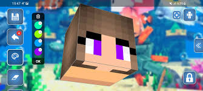
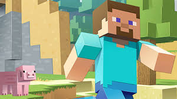
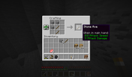

Minecraft es un videojuego sandbox desarrollado por Mojang Studios . El juego fue creado por Markus "Notch" Persson en el lenguaje de programación Java . Después de varias versiones de prueba privadas tempranas, se hizo público por primera vez en mayo de 2009 antes de ser lanzado por completo en noviembre de 2011, con la renuncia de Notch y Jens "Jeb" Bergensten a cargo del desarrollo. Desde entonces, Minecraft se ha portado a varias otras plataformas y es el videojuego más vendido de todos los tiempos , con más de 238 millones de copias vendidas y casi 140 millones de jugadores activos mensuales a partir de 2021.
En Minecraft , los jugadores exploran un mundo 3D en bloques generado por procedimientos con un terreno virtualmente infinito y pueden descubrir y extraer materias primas, crear herramientas y artículos, y construir estructuras, movimientos de tierra y máquinas simples. Dependiendo del modo de juego elegido, los jugadores pueden luchar contra turbas hostiles , así como cooperar o competir contra otros jugadores en el mismo mundo. Los modos de juego incluyen un modo de supervivencia (en el que los jugadores deben adquirir recursos para construir en el mundo y mantener la salud) y un modo creativo (donde los jugadores tienen recursos ilimitados y acceso al vuelo). También hay una amplia variedad de contenido generado por el usuario , comomodificaciones , servidores , máscaras , paquetes de texturas y mapas personalizados, que agregan nuevas mecánicas y posibilidades de juego.
Minecraft recibió elogios de la crítica, ganó varios premios y luego fue citado como uno de los mejores videojuegos de todos los tiempos . Las redes sociales, las parodias, las adaptaciones, los productos y las convenciones anuales de Minecon desempeñaron un papel destacado en la popularización del juego. El juego también se ha utilizado en entornos educativos para enseñar química , diseño asistido por computadora e informática . En 2014, Microsoft compró Mojang y la propiedad intelectual de Minecraft por 2500 millones de dólares. También se han realizado varios spin-offs, incluido Minecraft: Story Mode , [i] Minecraft Dungeons , Minecraft Earth y el próximo Minecraft Legends .
https://www.minecraft.net/es-es
Productos
skins

Este artículo trata sobre las máscaras de los jugadores en Minecraft . Para héroes en Minecraft Dungeons , consulte MCD:Hero . Para texturas del mundo, consulte el paquete de recursos . Para obtener una lista de paquetes de máscaras en Bedrock Edition , consulte paquete de máscaras .
Las máscaras se refieren a las texturas que se colocan en un modelo de jugador o mafia .
Personajes

Steve es un personaje ficticio de la franquicia de videojuegos Minecraft . Creado por el desarrollador de videojuegos sueco Markus "Notch" Persson e introducido en la versión inicial de Minecraft basada en Java que se lanzó públicamente el 17 de mayo de 2009, Steve es una de las dos pieles de personajes de jugador predeterminadas disponibles para jugadores de versiones contemporáneas de Minecraft. Steve carece de una historia de fondo oficial de los desarrolladores de Minecraft, ya que pretende ser un avatar de jugador personalizable en lugar de ser un personaje predefinido. Su contraparte femenina, Alex, se introdujo por primera vez en agosto de 2014 para las versiones para PC de Minecraft. Dependiendo de la versión de Minecraft, los jugadores tienen la posibilidad de aparecer como Steve o Alex al comenzar un nuevo juego.
Steve se convirtió en un personaje ampliamente reconocido en la industria de los videojuegos tras el éxito comercial y de crítica de la franquicia Minecraft. Considerado por algunos críticos como una mascota de la propiedad intelectual de Minecraft, su imagen ha aparecido ampliamente en publicidad y mercadería, incluyendo prendas de vestir y artículos coleccionables. El personaje también inspiró una serie de medios no oficiales y leyendas urbanas, en particular el creepypasta de Herobrine, que se compartió ampliamente en las comunidades de Internet como un meme durante la década de 2010.
Como se juega
Minecraft es un juego de caja de arena en 3D que no tiene objetivos que cumplir, lo que permite a los jugadores una gran libertad para elegir cómo jugar el juego. [19] Sin embargo, hay un sistema de logros , [20] conocido como "avances" en la edición Java del juego y " trofeos " en los puertos de PlayStation. [21] El juego está en perspectiva en primera persona de forma predeterminada, pero los jugadores tienen la opción de una perspectiva en tercera persona. [22]El mundo del juego se compone de objetos 3D en bruto, principalmente cubos y fluidos, y comúnmente llamados "bloques", que representan diversos materiales, como tierra, piedra, minerales, troncos de árboles, agua y lava. El juego principal gira en torno a recoger y colocar estos objetos. Estos bloques están dispuestos en una cuadrícula 3D, mientras que los jugadores pueden moverse libremente por el mundo. Los jugadores pueden "minar" bloques y luego colocarlos en otro lugar, lo que les permite construir cosas. [23] Muchos comentaristas han descrito el sistema de física del juego como poco realista. [24] El juego también contiene un material llamado redstone, que se puede usar para hacer dispositivos mecánicos primitivos, circuitos eléctricos y puertas lógicas , lo que permite la construcción de muchos sistemas complejos.
El mundo del juego es virtualmente infinito y se genera por procedimientos a medida que los jugadores lo exploran, utilizando una semilla de mapa que se obtiene del reloj del sistema en el momento de la creación del mundo (o especificado manualmente por el jugador). [26] [27] [28] Hay límites en el movimiento vertical, pero Minecraft permite generar un mundo de juego infinitamente grande en el plano horizontal. Sin embargo, debido a problemas técnicos cuando se alcanzan ubicaciones extremadamente distantes, existe una barrera que impide que los jugadores atraviesen ubicaciones a más de 30 000 000 de cuadras del centro. [j]El juego logra esto al dividir los datos del mundo en secciones más pequeñas llamadas "fragmentos" que solo se crean o cargan cuando los jugadores están cerca. [26] El mundo está dividido en biomas que van desde desiertos hasta selvas y campos nevados; [29] [30] el terreno incluye llanuras, montañas, bosques, cuevas y masas de agua/lava. [28] El sistema de tiempo del juego sigue un ciclo diurno y nocturno, y un ciclo completo dura 20 minutos en tiempo real.
Al comenzar un nuevo mundo, los jugadores deben elegir uno de los cinco modos de juego, así como una de las cuatro dificultades, que van desde "Pacífico" hasta "Difícil". Aumentar la dificultad del juego hace que el jugador reciba más daño de las turbas , además de tener otros efectos específicos de la dificultad. Por ejemplo, la dificultad Pacífica evita que aparezcan mobs hostiles , y la dificultad Difícil permite a los jugadores morir de hambre si se agota su barra de hambre. [31] Una vez seleccionado, se puede cambiar la dificultad, pero el modo de juego está bloqueado y solo se puede cambiar con trampas .
Los nuevos jugadores tienen una máscara de personaje predeterminada seleccionada al azar de Steve o Alex, [32] pero la opción de crear máscaras personalizadas estuvo disponible en 2010. [33] Los jugadores se encuentran con varios personajes que no son jugadores conocidos como mobs , como animales, aldeanos y criaturas hostiles. [34] Se pueden cazar mobs pasivos, como vacas, cerdos y pollos, para obtener alimentos y materiales de artesanía. Aparecen durante el día, mientras que las turbas hostiles, incluidas arañas grandes, esqueletos y zombis , aparecen durante la noche o en lugares oscuros como cuevas. [28]Algunas turbas hostiles, como zombis, esqueletos y ahogados (versiones submarinas de zombis), se queman bajo el sol si no tienen casco. [35] Otras criaturas exclusivas de Minecraft incluyen la enredadera (una criatura explosiva que se acerca sigilosamente al jugador) y el enderman (una criatura con la capacidad de teletransportarse , así como de recoger y colocar bloques). [36] También hay variantes de mobs que se generan en diferentes condiciones; por ejemplo, los zombis tienen variantes de cáscara y ahogados que se generan en desiertos y océanos, respectivamente.
Minecraft tiene dos dimensiones alternativas además del Overworld (el mundo principal): el Nether y el End. [36] El Nether es una dimensión infernal a la que se accede a través de portales construidos por jugadores; contiene muchos recursos únicos y se puede usar para viajar grandes distancias en el Overworld, debido a que cada bloque recorrido en el Nether equivale a 8 bloques recorridos en el Overworld. [38] El agua no puede existir en el Nether, ya que se vaporizará instantáneamente. [39] El Nether está poblado principalmente por mobs parecidos a pigman llamados piglins y sus contrapartes zombificados, además de mobs flotantes parecidos a globos llamados ghasts. [40] El jugador también puede construir un jefe opcionalla mafia llamó Wither a partir de los materiales encontrados en el Nether.
Se llega al Fin a través de portales subterráneos en el Overworld. Consiste en islas que flotan sobre un vacío oscuro e interminable. Un dragón jefe llamado Ender Dragon protege la isla central más grande. [42] Matar al dragón abre el acceso a un portal de salida, que al entrar muestra los créditos finales del juego y un poema escrito por el novelista irlandés Julian Gough . [43] Luego, los jugadores son teletransportados a su punto de reaparición y pueden continuar el juego indefinidamente.
Modo de juego
Supervivencia

En el modo de supervivencia, los jugadores deben recolectar recursos naturales como madera y piedra que se encuentran en el entorno para fabricar ciertos bloques y elementos. [28] Dependiendo de la dificultad, los monstruos aparecen en áreas más oscuras fuera de un cierto radio del personaje, lo que requiere que los jugadores construyan un refugio por la noche. [28] El modo también tiene una barra de salud que se agota por ataques de turbas, caídas, ahogamiento, caída en lava, asfixia, inanición y otros eventos. [45] Los jugadores también tienen una barra de hambre, que debe rellenarse periódicamente comiendo comida en el juego, excepto en dificultad pacífica. [45] [46]Si la barra de hambre se agota, la curación automática se detendrá y, finalmente, la salud se agotará. La salud se repone cuando los jugadores tienen una barra de hambre casi llena o continuamente en dificultad pacífica.
Los jugadores pueden crear una amplia variedad de elementos en Minecraft . [48] Los elementos que se pueden fabricar incluyen armaduras, que mitigan el daño de los ataques; armas (como espadas o hachas), que permiten matar monstruos y animales más fácilmente; y herramientas, que rompen ciertos tipos de bloques más rápidamente. Algunos artículos tienen varios niveles según el material utilizado para fabricarlos, y los artículos de nivel superior son más efectivos y duraderos. Los jugadores pueden construir hornos, que pueden cocinar alimentos, procesar minerales y convertir materiales en otros materiales. [49] Los jugadores también pueden intercambiar bienes con un aldeano ( PNJ ) a través de un sistema de comercio, que implica intercambiar esmeraldas por diferentes bienes y viceversa.
El juego tiene un sistema de inventario que permite a los jugadores llevar una cantidad limitada de artículos. [51] Al morir, los artículos en los inventarios de los jugadores se eliminan a menos que el juego se reconfigure para que no lo haga. Luego, los jugadores reaparecen en su punto de generación, que de forma predeterminada es donde los jugadores aparecen por primera vez en el juego y se puede reiniciar durmiendo en una cama [52] o usando un ancla de reaparición. [53] Los elementos arrojados se pueden recuperar si los jugadores pueden alcanzarlos antes de que desaparezcan o desaparezcan después de 5 minutos. Los jugadores pueden adquirir puntos de experiencia matando mobs y otros jugadores, minando, fundiendo minerales, criando animales y cocinando alimentos. La experiencia se puede gastar en encantarherramientas, armaduras y armas. [31] Los objetos encantados son generalmente más poderosos, duran más o tienen otros efectos especiales.
Modo duro
El modo Hardcore es una variante del modo de supervivencia que está bloqueada en la configuración más difícil y tiene muerte permanente . [54] Si un jugador muere en un mundo extremo, ya no se le permite interactuar con él, por lo que puede ponerse en modo espectador y explorar el mundo o eliminarlo por completo. [55] Solo se puede acceder a este modo de juego dentro de la Edición Java de Minecraft .
Modo creativo
En el modo creativo, los jugadores tienen acceso a casi todos los recursos y elementos del juego a través del menú de inventario y pueden colocarlos o quitarlos al instante. [57] Los jugadores pueden alternar la capacidad de volar libremente por el mundo del juego a voluntad, y sus personajes no reciben ningún daño y no se ven afectados por el hambre. [58] [59] El modo de juego ayuda a los jugadores a concentrarse en construir y crear proyectos de cualquier tamaño sin molestias.
Modo de aventura
El modo Aventura se diseñó específicamente para que los jugadores pudieran experimentar aventuras y mapas personalizados creados por los usuarios. [60] [61] [62] La jugabilidad es similar al modo de supervivencia pero con varias restricciones, que el creador del mapa puede aplicar al mundo del juego. Esto obliga a los jugadores a obtener los elementos requeridos y experimentar aventuras de la manera que el creador del mapa pretendía. [62] Otra adición diseñada para mapas personalizados es el bloque de comandos; este bloque permite a los creadores de mapas expandir las interacciones con los jugadores a través de comandos de servidor con secuencias de comandos.
Modo espectador
El modo espectador permite a los jugadores volar a través de bloques y ver el juego sin interactuar directamente. Los jugadores no tienen un inventario, pero pueden teletransportarse a otros jugadores y verlos desde la perspectiva de otro jugador o criatura.